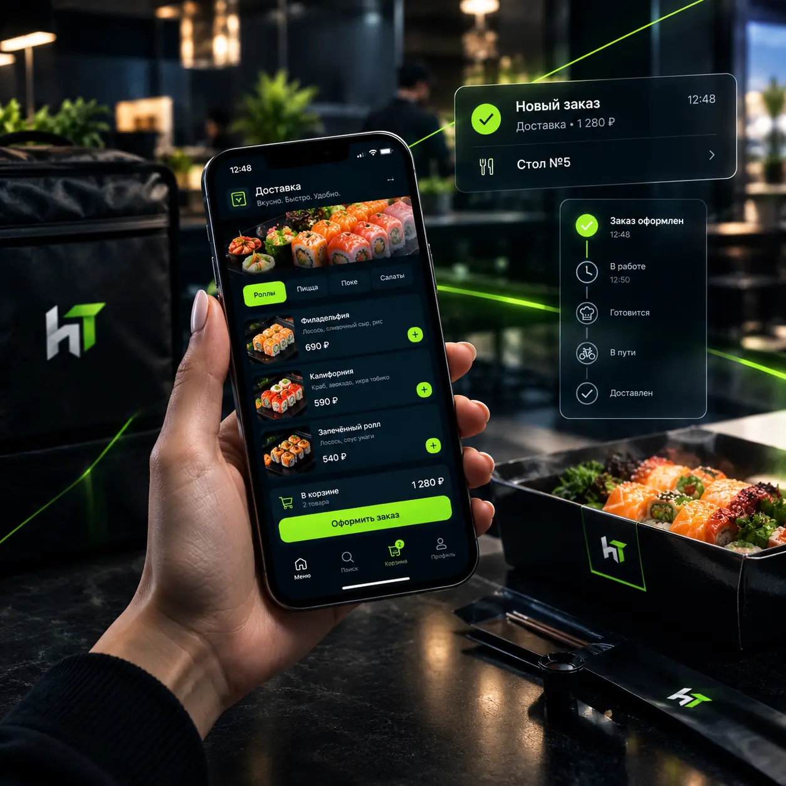

Каждый заказ, пришедший через агрегатор доставки, теряет для заведения от 35% до 55% стоимости. Часть рестораторов к этому привыкла и считает «платой за трафик». Но если у заведения уже есть своя аудитория — постоянные гости, соцсети, точка на оживлённой улице — платить такую комиссию с каждого заказа становится невыгодно.
Разберём, когда свой сайт доставки окупается, а когда агрегаторы всё ещё выигрывают, и что учесть при запуске, чтобы не потерять заказы.
Почему агрегаторы забирают так много
Агрегатор — это не «партнёр с процентом», а полноценная платформа с приложением, курьерами, маркетингом и поддержкой. Комиссия включает:
- доступ к трафику — заведение платит за то, что его увидят;
- логистику — если доставка через курьеров агрегатора;
- эквайринг и обработку заказов;
- поддержку клиентов и разбор спорных ситуаций.
Средняя итоговая комиссия для кафе и ресторанов в России — 35–45%, для премиальных кухонь и в высокий сезон может доходить до 55%. При среднем чеке 1200 ₽ заведение теряет 420–660 ₽ с каждого заказа.
Когда свой сайт доставки выгоден
Свой сайт — это не замена агрегатору, а второй канал для тех заказов, которые и без агрегатора пришли бы к вам. Ключевые сценарии:
| Сценарий | Что даёт свой сайт |
|---|---|
| У заведения есть постоянные гости | Они заказывают напрямую, комиссия 0% |
| Есть страница в соцсетях | Ссылка «заказать» ведёт на ваш сайт, а не в агрегатор |
| Много заказов самовывозом | Не нужно платить комиссию за то, что гость сам придёт |
| Корпоративные заказы (обеды в офисы) | Счёт, договор, регулярные поставки без посредника |
| Промо и акции | Вы сами решаете, что показывать гостю — без ограничений платформы |
Если 30–40% заказов на доставку приходит от постоянных гостей, свой сайт окупает вложения за 1–2 месяца.

Когда агрегатор всё ещё выгоднее
Честно: агрегатор — это не зло. Он реально даёт трафик и работает как канал привлечения. Свой сайт не заменит его, если:
- заведение только открылось и о нём ещё никто не знает;
- нет своей аудитории — ни в соцсетях, ни среди постоянных гостей;
- нет времени и ресурса заниматься продвижением сайта самостоятельно.
Оптимальная стратегия — работать с обоими каналами параллельно: агрегаторы для новых гостей, свой сайт — для тех, кто уже знает заведение.
Как выглядит свой сайт доставки на практике
Современный сайт доставки для кафе — это не «вторая витрина», а самостоятельный инструмент с онлайн-меню, корзиной, оплатой и интеграцией с кассой. Минимальный функционал:
- онлайн-меню с категориями и фотографиями;
- корзина и оформление заказа за 1–2 минуты;
- оплата картой и СБП прямо на сайте;
- выбор способа получения: доставка или самовывоз;
- промокоды и программа лояльности;
- уведомления о статусе заказа;
- интеграция с кассой и кухней — заказ падает напрямую в систему.
Такой сайт запускается прямо внутри системы автоматизации — не требует отдельного разработчика и работает в связке с кассой и учётом. Обычно это занимает 1–2 дня: наполняете меню, настраиваете зоны доставки и подключаете оплату.
Хотите посчитать экономию для своего заведения?
Запустите автоматизацию с сайтом доставки и протестируйте её 14 дней бесплатно. Полный функционал, без привязки карты и обязательств.
Попробовать 14 дней бесплатноЧто важно не упустить при запуске
- Мобильная версия. 80%+ заказов на доставку оформляют со смартфона. Сайт должен быть удобен в одну руку.
- Скорость. Если страница грузится дольше 3 секунд — гость уходит.
- Фотографии блюд. Плохие фото = низкая конверсия. Даже пересъёмка на телефон лучше стоковых картинок.
- Интеграция с кассой. Иначе заказы придётся вбивать вручную — это съест всё время менеджера.
- Продвижение. Сайт сам себя не приведёт гостей: QR-коды на столах, ссылка в соцсетях, вложения в чеке.
Итог
Свой сайт доставки — это инструмент возврата маржи, а не замена агрегатора. Если у заведения есть постоянные гости, соцсети и стабильный поток заказов — сайт окупается быстро и возвращает 35–55% с каждого заказа.
Если нужна помощь с подбором системы, подключением кассы и запуском сайта под ваше заведение — свяжитесь с нами. Мы открывали заведения сами и знаем, как это работает изнутри.
Готовы попробовать?
14 дней бесплатно, полный доступ ко всем функциям. Без обязательств и без привязки карты.
Попробовать 14 дней бесплатно